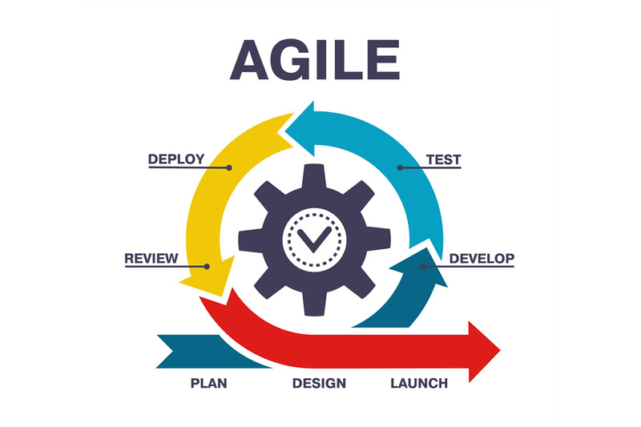

Agile on paindlik tarkvaraarenduse metoodika, mis keskendub kiirele arendusele, pidevale tagasisidele. Agile-i eesmärk on kiiresti reageerida muutuvatele nõudmistele ja pidevalt edasi areneda.
Plan: Planeeritakse projekti esimesed ülesanded ja omadused.
Design: Kiire disain, mis keskendub vaid vajalikule.
Develop: Arendatakse välja töökood lühikestes iteratsioonides.
Test: Testitakse igat komponenti, et tagada kvaliteet.
Review: Arenduse lõpus toimub tagasiside kogumine.
Release: Tootmiskeskkonda toomine, valmis funktsionaalsus. on hea?
Paindlik muutuvate nõudmistega.
Kiire tagasiside ja areng, mis vähendab vigade tegemise võimalust.
Suurenenud koostöö ja pidev suhtlus meeskonnaliikmete ja klientidega.
Kuna projekt ei pruugi alati olla täielikult planeeritud, võib see põhjustada probleeme.
Suuri muudatusi on raske teha hilises faasis.
